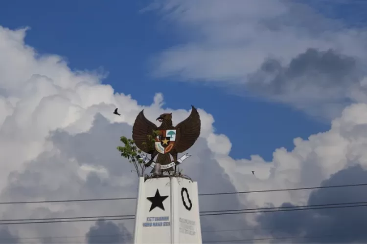

Hai, saya
UKAASYAH FATHUR RIZIQ
Mahasiwa Politeknik Harapan Bersama
About me
Saya adalah seorang mahasiswa berkomitmen untuk memberikan yang terbaik dalam segala pekerjaan dan selalu bersemangat untuk belajar hal-hal baru.
Terpilih sebagai peserta untuk belajar fiber optic pada tahun 2019
pernah bekerja sebagai sales printer kasir pada tahun 2020-2021
Pernah bekerja sebagai checker di pergudangan shopee pada tahun 2022

Resume Experience
KLIK DISINI
